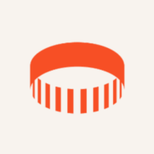

Interests
What an audience cares about, ranked by real affinity.

SoPrism describes audiences from their interests and affinities on Facebook and Instagram. We use it to know who your audiences really are, and your competitors'.
//SOPRISM AT A GLANCE
SoPrism is an audience analysis tool founded in Belgium and bought in 2022 by Audiense, which it is now part of (Audiense Discover). It builds audience profiles from Meta's aggregated, anonymous data: interests, affinities, geography.
//WHAT IT DOES
What an audience cares about, ranked by real affinity.
Who they reach that you do not, and the reverse.
From the world down to a city, to compare markets.
Groups described by behaviour, not by a workshop.
//SOPRISM AGENCY
SoPrism provides data. A SoPrism agency like Licter turns it into a decision: here is how we use it.
We start from the decision to make, not from a keyword list: the perimeter follows the question.
Queries, sources, languages and periods, set by the consultants who will read the output themselves.
An analysis crossed with our other sources, and a recommendation your teams can act on.
//WHAT WE DELIVER
//USE CASES
Each card leads to the use case it contributes to.
//LIMITS AND COMPLEMENTS
Its data comes from Facebook and Instagram: we cross it with other sources for the other networks.
It says who people are, not what they say: social listening completes the read.
We cross it with
//FAQ
Yes: as a SoPrism agency, we run the tool for our clients, set it up, read it and deliver the analysis. Licter is not its publisher; we are an independent consultancy that picks the tool by the question.
No: it reads behaviour that already exists, with no questionnaire and no declaration bias.
Yes, since 2022; the tool is now part of Audiense Discover.
The tool works on aggregated, anonymous data, not on individual profiles.
//TIME TO ACT
Send us the question. If another tool answers it better, we will tell you: we use about fifteen.
NOTED - WE GET BACK TO YOU WITHIN 24 HOURS